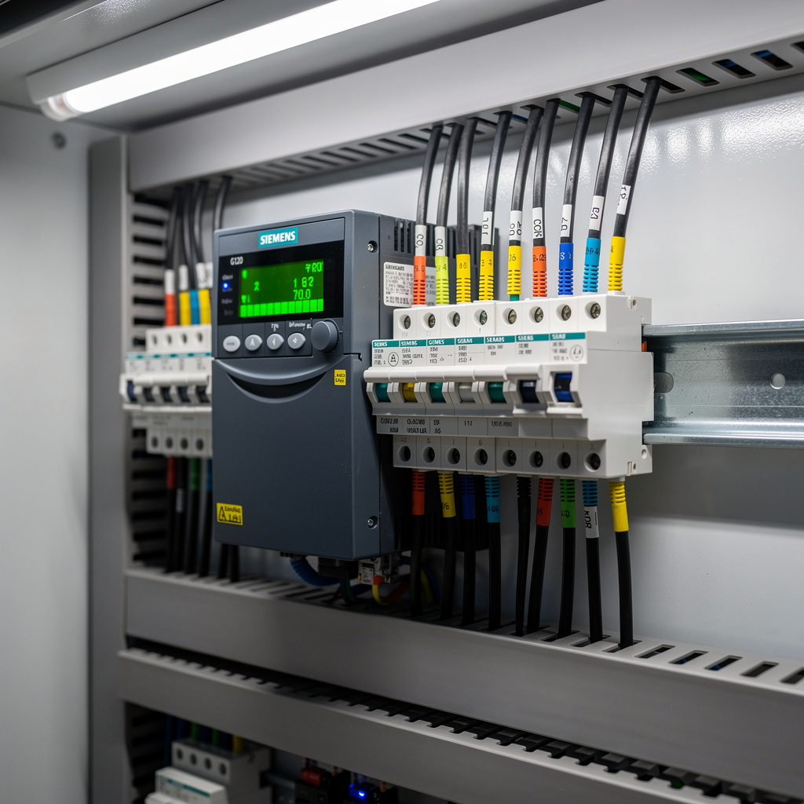
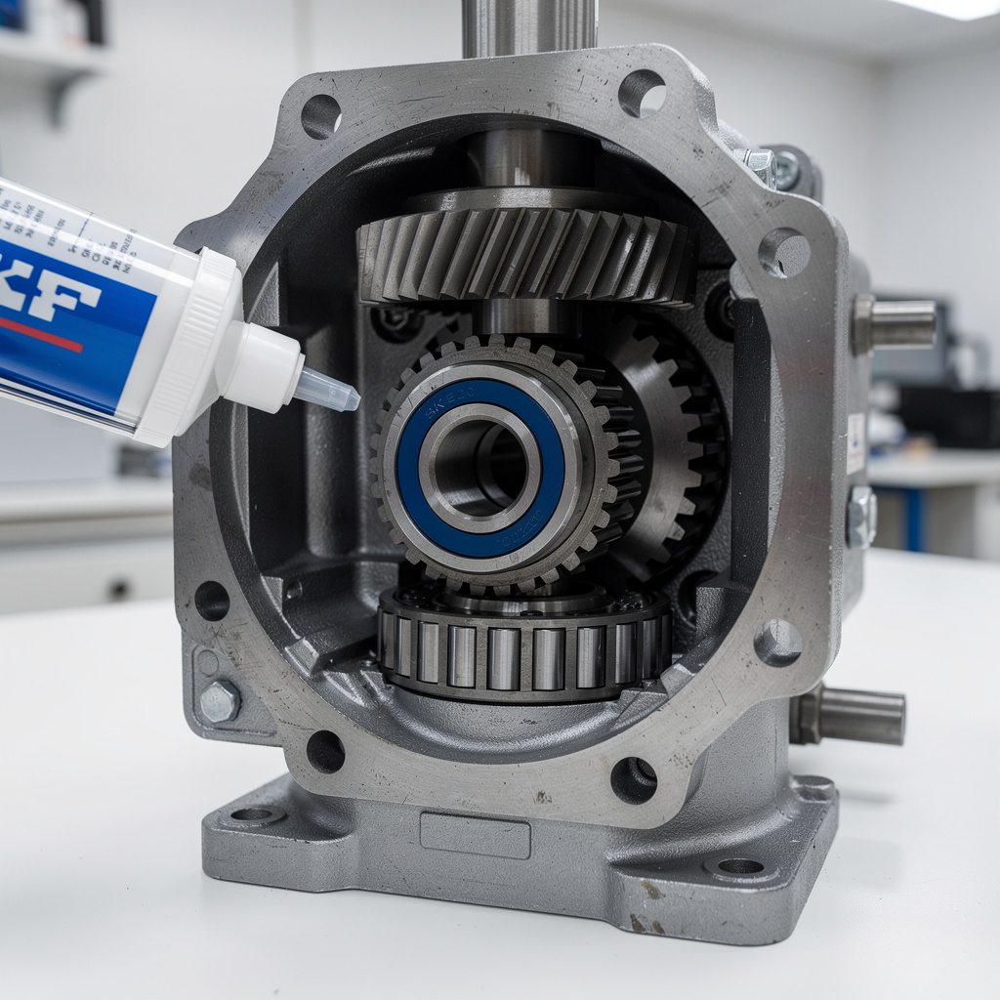

Panne résolution variateur de fréquence — Convoyeur principal
// Le Problème
Contexte : Ligne de production agroalimentaire fonctionnant 20 h/jour. Convoyeur principal de 45 m alimentant 3 lignes d'embouteillage secondaires. Arrêt total de la production sur les 3 lignes.
Symptôme : Défaut variateur de fréquence F0001 'Overcurrent' au démarrage du convoyeur principal. Tentative de redémarrage automatique échoue après 3 essais. Moteur 37 kW triphasé ne tourne pas. LED variateur clignote rouge F0001. Production arrêtée depuis 1 h 30.
// Diagnostic
Électrique : mesure résistance stator entre phases U-V, V-W, W-U = 0,8 Ω stable (valeur nominale 0,75 Ω). Isolation phase-terre > 500 MΩ. Moteur non défectueux électriquement.
Mécanique : roue libre du réducteur bloquée en rotation manuelle. Démontage carter : roulement à rouleaux coniques de sortie brûlé (température > 120 °C). Graisse complètement noircie et desséchée. Engrenage secondaire avec micro-piqûres sur les flancs de denture.
Variateur : paramètre P0640 (limite courant) réglé à 150 % du nominal. Au démarrage, le moteur tente d'accélérer mais le réducteur bloqué provoque un appel de courant immédiat > limite → F0001. Historique : 47 occurrences F0001 sur les 30 derniers jours, jamais investiguées (redémarrages manuels répétés).



// Solution apportée
// Résultat mesuré
Production redémarrée après 2 h 15 d'arrêt. Zéro redémarrage forcé depuis la réparation. Température réducteur stable à 45–50 °C en fonctionnement continu. Courant moteur nominal respecté. Durée de vie réducteur estimée rétablie à nominale (10+ ans).